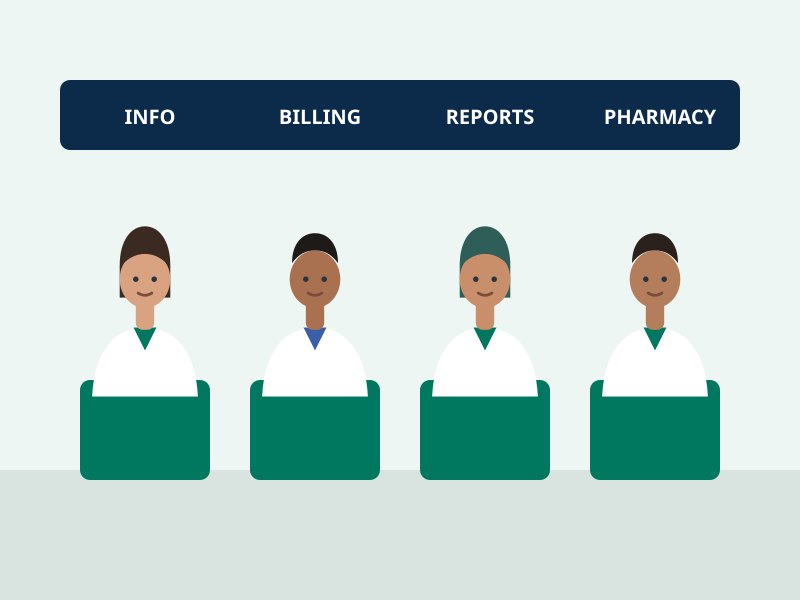
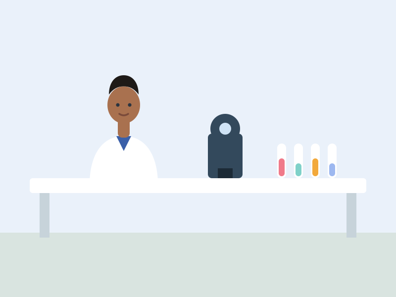

Since June 1980
A name of trust in Bangladesh healthcare.
Nirmol Health Trust began with 13 employees and one idea — to serve humanity. Today it runs a medical college, a nursing institute, specialised and general hospitals, and one of the largest diagnostic networks in South Asia.
Our laboratory and imaging reports are accepted by Singapore General Hospital, Mount Elizabeth and Bumrungrad International.
Our services
From cardiac surgery to dental care, with modern equipment and experienced consultants.
Hospital Services
Two modern cath labs, a round-the-clock CCU, adult and paediatric cardiac surgery, a stroke unit with DSA and vascular surgery.
Learn moreRadiology & Imaging
3 Tesla MRI, multi-slice CT, digital X-ray and 4D ultrasonography, reported by consultants with European and North American degrees.
Learn moreLaboratory Services
Aptio automation, Ortho Clinical and DiaSorin systems, HPLC HbA1c, a 64-allergen analyser and PCR-based molecular diagnostics.
Learn moreDiabetes Center
Specialist care for diabetes mellitus, a metabolic disorder affecting how the body uses food for energy and growth.
Learn morePain & Physiotherapy
Renowned doctors, physiotherapists and modern equipment for pain management and rehabilitation.
Learn moreDental Center
Oral & maxillofacial surgery, conservative, cosmetic and general dentistry by male and female dental surgeons.
Learn moreOur consultants
Specialists available across our branches in Dhaka and other districts.
Finest patient care & amenities
Every unit has dedicated counters so patients and families get help quickly, from registration to report delivery.
- Information
- Report Delivery
- Customer Care
- Cash Counter
- Pharmacy / Medicine
- Billing
- Admission Counseling
- Customer Service

Best laboratory tests available
Fully automated analysers and PCR-based molecular diagnostics, verified by experienced consultants.
- Haematological Exam
- Biochemical Exam
- ELISA Hepatitis Panel
- HIV Test
- Hormone Test
- Immunology / Serology

Gallery
Need help choosing a doctor or a test?
Our call centre is open every day to book serials and answer questions.
সতর্কীকরণ বিজ্ঞপ্তি
এতদ্বারা সকলের অবগতির জন্য জানানো যাচ্ছে যে, নির্মল হেলথ ট্রাস্ট মানব কল্যাণ ও স্বাস্থ্যসেবা মূলক প্রতিষ্ঠান। বিগত কয়েক দশক ধরে রাজধানী ঢাকা সহ বাংলাদেশের বিভিন্ন জেলায় (সকল প্রকার রোগ নির্ণয়ে ২৫% ছাড়ে) অত্যন্ত সুনামের সাথে স্বাস্থ্যসেবা প্রদান এবং মানব কল্যাণমূলক কাজ করে আসছে এবং গণমানুষের ভরসার ঠিকানা হয়ে উঠেছে। নির্মলের এই অর্জিত সুনামকে কাজে লাগিয়ে কিছু অসাধু, দালাল ও প্রতারকচক্র বিভিন্ন সময় নির্মলের নাম, লোগো ব্যবহার করে ডায়গনিস্টিক ও স্বাস্থ্যসেবামূলক প্রতিষ্ঠানের ব্যানারে চমকপ্রদ ও লোভনীয় বেতনের চাকরি দেওয়ার প্রলোভন দেখিয়ে দেশের সাধারণ মানুষের নিকট থেকে বিপুল পরিমাণ অর্থ হাতিয়ে নিচ্ছে এবং নির্মলের সুনাম ক্ষুণ্ণ করে আসছে।
এমতাবস্থায়, উল্লেখিত বিষয়ে সকলকে সতর্ক থাকার জন্য বিশেষভাবে অনুরোধ করা হল। নির্মল হেলথ ট্রাস্ট চাকুরি প্রদানের জন্য কারো নিকট থেকে কোন প্রকার আর্থিক লেনদেন করে না এবং নির্দিষ্ট ওয়েবসাইট এবং জাতীয় দৈনিক পত্রিকা ব্যতীত কোন প্রকার চাকরির বিজ্ঞাপন দেওয়া হয়না। কেউ এরকম অর্থ দাবি করলে তার বিষয়ে নিকটস্থ থানায় তথ্য দিন অথবা আমাদের সাথে যোগাযোগ করুন। যে বা যারা এহেন প্রতারনামূলক কর্মকান্ডের সাথে জড়িত তাদের বিরুদ্ধে দেশে প্রচলিত আইনানুযায়ী ব্যবস্থা গ্রহণ করা হবে।
যোগাযোগের ঠিকানা: নির্মল হেলথ ট্রাস্ট প্রধান কার্যালয়, বাড়ি# ১২, রোড# ৫, ধানমন্ডি, ঢাকা।